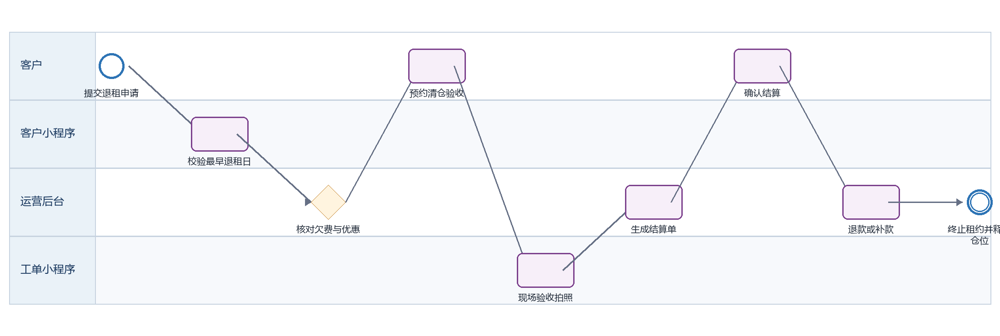

迷你仓退租 PRD
下载 Word 文档迷你仓退租 PRD
客户小程序研发详细需求规格 · V2.0 · 2026-09-08
定义退租申请、清仓预约、现场验收、费用与按金结算、合约终止和仓位释放。
| 属性 | 内容 |
|---|---|
| 文档编号 | MP-ST-05 |
| 适用端 | 客户小程序、运营后台、工单小程序及领域服务 |
| 范围 | 退租资格、日期与原因、欠费提示、清仓预约、验收、结算、退款进度。 |
| 不在本模块范围 | 财务实际打款和仓位维修作业。 |
1 目标与边界
1.1 本期范围
退租资格、日期与原因、欠费提示、清仓预约、验收、结算、退款进度。
1.2 不在本模块范围
财务实际打款和仓位维修作业。
1.3 角色与系统责任
| 角色或系统 | 职责 |
|---|---|
| 客户 | 浏览、选择、签约、付款、提交申请、查询进度 |
| 客户小程序 | 采集意图并展示服务端状态，不自行决定价格、库存、资格或审批结果 |
| 运营后台 | 维护主数据、价格、库存、可操作项、审批、异常处理和人工改派 |
| 工单小程序 | 承接送取、验收、搬仓、清仓等线下任务，回传节点、附件和异常 |
| 领域服务 | 保存订单、租约、箱体、预约、支付与合同的权威状态并发布事件 |
2 BPMN 业务流程

圆形表示开始或结束事件，圆角矩形表示任务，菱形表示服务端判断。
跨端节点必须先写入领域服务，再由事件刷新客户侧时间线。
3 状态机与准入
| 状态码 | 客户文案 | 进入条件 | 下一步 |
|---|---|---|---|
| APPLIED | 已申请 | 等待资料校验 | 确认预约 |
| INSPECTION_SCHEDULED | 已预约验收 | 保留门禁至预约结束 | 现场验收 |
| SETTLING | 结算中 | 验收完成 | 确认应退/应补 |
| REFUNDING | 退款中 | 应退金额已提交渠道 | 到账 |
| PAYMENT_DUE | 待补款 | 存在欠费或损坏费 | 付款 |
| COMPLETED | 已退租 | 租约终止且仓位释放 | 终态 |
| CANCELLED | 已撤销 | 未进入现场验收 | 恢复租用中 |
状态码是跨端契约，中文文案不得作为业务判断条件；写操作必须携带聚合版本并处理409冲突。
4 页面与交互
4.1 退租申请
| 属性 | 要求 |
|---|---|
| 建议路由 | /pages/rental/moveout |
| 入口 | 有效租约详情 |
| 页面字段 | 租约、到期日、最早退租日、期望日期、原因、优惠影响、欠费、按金、清仓声明、备注 |
| 主要操作 | 选择日期、确认规则、提交 |
| 通用状态 | 骨架屏、空态、无网络、超时、无权限、数据已变化、提交中、提交成功和提交失败分别实现 |
4.2 清仓验收预约
| 属性 | 要求 |
|---|---|
| 建议路由 | /pages/appointment/create |
| 入口 | 申请通过 |
| 页面字段 | 门店、日期、时段、联系人、电话、搬运需求、注意事项 |
| 主要操作 | 选择时段、改期、取消 |
| 通用状态 | 骨架屏、空态、无网络、超时、无权限、数据已变化、提交中、提交成功和提交失败分别实现 |
4.3 退租结算进度
| 属性 | 要求 |
|---|---|
| 建议路由 | /pages/rental/moveout-detail |
| 入口 | 订单详情 |
| 页面字段 | 验收记录、照片、费用项、按金、欠费、损坏费、应退/应补、退款方式、预计到账、时间线 |
| 主要操作 | 确认结算、补款、联系客服 |
| 通用状态 | 骨架屏、空态、无网络、超时、无权限、数据已变化、提交中、提交成功和提交失败分别实现 |
5 业务规则
最早退租日、通知期、违约金和优惠回收由后台按合同版本计算。
提交退租后禁止新建续租或转仓；允许在现场验收前按后台规则撤销。
清仓前门禁保持有效；验收通过并确认客户已清空后才能终止门禁。
工单小程序必须回传仓位照片、空仓确认、钥匙/门禁状态、损坏项和客户确认。
结算单版本变化必须重新确认；应退款原路退回，失败转人工财务任务。
仓位释放前如需维修，状态进入MAINTENANCE而非AVAILABLE。
6 接口契约
| 方法 | 接口 | 用途 | 幂等要求 |
|---|---|---|---|
| GET | /rentals/{id}/moveout-quote | 查询最早日期和预估结算 | 否 |
| POST | /moveouts | 提交退租 | 是，clientRequestId |
| POST | /appointments | 创建清仓验收预约 | 是，clientRequestId |
| GET | /moveouts/{id}/settlement | 查询结算单 | 否 |
| POST | /moveouts/{id}/settlement-confirm | 确认结算 | 是，settlementVersion |
通用响应包含code、message、data、traceId和serverTime。
金额使用整数最小货币单位；写接口校验登录身份、资源归属、幂等键和聚合版本。
错误码区分参数、资格、并发、锁定、支付确认、权限和服务不可用。
7 跨端交互和数据一致性
| 方向 | 规则 |
|---|---|
| 小程序到后台 | 只调用BFF或领域服务；后台通过同一业务编号处理。 |
| 后台到小程序 | 后台写领域状态并发布事件，小程序刷新权威状态。 |
| 后台到工单小程序 | 线下任务携带workOrderId、orderId、SLA和附件要求。 |
| 工单到客户小程序 | 扫码、附件和异常先回传领域服务，再生成客户可见时间线。 |
| 消息通知 | 只携带业务编号与深链，不下发敏感合同或门禁凭证。 |
7.1 领域事件
moveout.applied
inspection.scheduled
inspection.completed
settlement.created
refund.requested
rental.terminated
unit.released
8 异常与恢复
| 场景 | 识别条件 | 客户侧与后台处理 |
|---|---|---|
| 日期不合规 | 小于最早退租日 | 标记最近可选日期并解释费用影响 |
| 验收发现遗留物 | 现场工单异常 | 暂停结算，上传证据并创建客户确认任务 |
| 退款失败 | 渠道拒绝或账户失效 | 显示退款异常并转财务人工处理 |
| 仓位损坏 | 验收记录损坏项 | 结算单新增费用并要求客户确认 |
9 非功能与安全
列表首屏P95不超过2秒，详情P95不超过1.5秒；长流程返回受理结果和异步进度。
敏感字段最小化展示，日志脱敏，下载资产使用短时签名URL。
所有状态变更记录前后值、操作者、来源端、原因码、时间和traceId。
支持简体中文、繁体中文、英文；日期、货币和地址按香港业务规范展示。
10 埋点与指标
| 事件 | 触发 | 关键属性 |
|---|---|---|
| page_view | 进入页面 | pageCode、source、orderId、businessType |
| action_click | 点击主要操作 | actionCode、statusCode、orderVersion |
| submit_result | 写操作完成 | requestId、result、errorCode、durationMs、traceId |
| flow_step_changed | 业务节点变化 | fromStatus、toStatus、eventId、operatorType |
11 验收标准
AC-01 退租日期不可早于服务端返回日期。
AC-02 活动转仓/续租存在时不得重复申请。
AC-03 现场验收附件在客户订单详情可见且敏感信息脱敏。
AC-04 应补款未完成时不得终止租约。
AC-05 退租完成后门禁失效且仓位进入可租或维修状态。
12 研发交付清单
| 角色 | 交付物 |
|---|---|
| 产品与设计 | 页面状态稿、字段字典、三语文案和验收用例 |
| 小程序前端 | 页面、组件、登录恢复、状态处理、埋点和错误恢复 |
| 后端 | OpenAPI、状态机、幂等、权限、事件、补偿和审计 |
| 运营后台 | 配置、审批、异常处理、重试和人工兜底 |
| 工单小程序 | 任务、扫码、附件、节点回传和异常上报 |
| 测试 | 端到端、并发、权限、弱网、重复事件和补偿验证 |